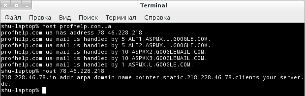

Linux: команды для настройки сети из консоли
Так уж исторически сложилось, что Linux - это операционная система, которая выросла из системы для администраторов и академических работников в десктоп ориентированную систему. Благодаря этому, большинство функций, которые в Windows выполняются в графическом интерфейсе, в Linux реализованы для консоли, а уж после этого реализуются для оконного интерфейса. Любая функця, как то: загрузить файл из интернета, диагностика проблем с сетью, управление параметрами сетевого интерфейса, отображение сетевой статистики - все они в превую очередь реализованы для командной строки. Сегодня мы рассмотрим вопрос настройки сети из консоли Linux, используя, проверенные временем инструменты, которые могут пригодиться для решения различного рода задач настройки сети.
Вы конечно-же можете отдавать предпочтение оконным сетевым утилитам, но при использовании консоли есть есть некоторые из них, которые чаще всего запусаются из командной строки, это ping, nslookup и много других.
Утилиты командной строки для работы с сетью:
curl & wget - загрузка ресурсов из интернет
Программы curl и wget используются для загрузки файлов из интернет, прямо в терминале. Если вы используете curl, для загрузки файла наберите выполняйте команду curl -O url_загружаемого_файла. Если вы используете wget, в этом случае не нужны никакие дополнительные параметры командной строки. После загрузки, файл будет находиться в домашней директории.
curl -O profhelp.com.ua/file_name
wget profhelp.com.ua/file_name
ping - проверка доступности хоста
ping - это диагностическая утилита, которая отправляет сетевые ECHO_REQUEST пакеты по указанному вами адресу, получает от него ответ и измеряет задержку между моментом отправки пакета и его получением. Если наблюдаются проблемы со связью - программа для всех пакетов, на которые не пришел ответ, вернет сообщение "reques timeout". Утилита ping - это первое средство, которое применяется для проверки подключен-ли компьютер к сети, как своего, так и удаленного, например сервер, на котором размещен ваш интернет сайт, или почтовый сервер. Только учтите, что в сети интернет имеется много серверов, которые не отвечают на ECHO_REQUEST пакеты, поэтому для проверки связи, пингуйте те сервера, которые вы наверняка знаете, что отвечают.
Команда ping есть во всех операционных системах, работающих с сетью. В отличие от Windows, где команда "ping адрес_хоста" отправит только четыре пакета, в Linux такая команда бутет неперывно слать пакеты, пока вы не прервете ее работу. Для того, чтоб ограничить количество пакетов, следует указать параметр командной строки "-c количество"
ping -c 4 profhelp.com.ua
tracepath и traceroute - трассировка маршрута до хоста
Чуть ранее мы рассмотрели утилиту ping которая проверяет доступность конкретного хоста в сети. В отличие от нее, утилита tracepath и traceroute позволяет не только определить есть проблемы, или нет, но и проследить маршрут, по которому проходят пакеты к конкретному хосту и выявить из-за какого хоста возникают проблемы с подключением. tracepath похожа на traceroute, но в отличие от последней не требует рутовых прав. В Ubuntu Linux по умолчанию устанавливается tracepath, а traceroute нужно устанавливать отдельно.
mtr - комбинация traceroute и ping
Команда mtr объединяет в себе фунции двух, ранее рассмотренных команд - ping и tracepath. mtr непрерывно отсылает ECHO_REQUEST пакеты каждому узлу из маршрута, позволяя в реальном времени видеть задержки, проходжения пакетов по каждому узлу. Эта утилита облегчает зачачу диагностики - легко обнаражить узел, из-за которого возникают проблемы и пропадают пакеты.
mtr profhelp.com.ua
По завершении работы с программой - нажмите Ctrl-C для выхода из нее.
host - выполнение DNS запросов
Команда host выполняет DNS запросы для прямого и обратного разрешения доменных имен. Запустите команду с IP адресом в качестве парамера и она вернет доменное имя, ассоциированное с ним. Также можно по доменному имени определить IP адрес. Для этого в качестве параметра укажите деменное имя.
host profhelp.com.ua
host 78.46.228.218

whois - поиск данных в базе данных WHOIS
Команда whois отображает whois записи, ассоциированные с доменным именем. Эта информация может пригодиться, если вам нужно узнать кто, где и когда зарегистрировал доменное имя и до какой даты действительна регистрация.
whois profhelp.com.ua
ifplugstatus - определение подключен-ли сетевой кабель
Команда ifplugstatus вам скажет подключен сетевой кабель к вашему компьютеру, или нет. Эта программа не установлена по умолчанию - для использования, ее нужно установить:
sudo apt-get install ifplugd
Запустите команду без параметров, для того, чтоб узнать информацию по всем интерфейсам, или укажите в качестве праметра командной строки интерфейс, статус которого вас интересует.
ifplugstatus
ifplugstatus eth0
“Link beat detected” обозначает, что кабель подключен. Если не подключен - программа скажет “unplugged”.
ifconfig - настройка сетевого интерфейса
Команда ifconfig - это, можно сказать одна из основных программ для настройки сети в Linux. Она имеет огромное количество параметров, которые позволят настроить, оптимизировать, а вслучае необходимости - отладить работу сетевого интерфейса. Также эта программа позволяет быстро определить IP дарес компьютера, а также другую информацию о сетевых интерфейсах, включая их имена, скорость и режим подключения и так далее. Для того, чтоб узнать информацию только по конкретному интерфейлу, укажите его имя в качестве парамертра командной строки:
ifconfig
ifconfig eth0
ifdown & ifup - активация/деактивация сетевого интерфейса
Команда ifdown и ifup - это команды, выполняющие то-же самое, что и команды ifconfig up и ifconfig down. Указав в качестве параметра командной строки имя интерфейса, вы отключите, или включите конкретный интерфейс. Выполнение данной команды тредует наличая прав суперпользователя:
sudo ifdown eth0
sudo ifup eth0
Выполение данной команды на десктоп версии Linux вероятнее всего завершится с сообщением о ошибке, так как на десктоп версиях Linux чаще всего используют NetworkManager, который отвечает за настройку сетевых интерфейсов, хотя на серверных версиях Linux эти команды должны работать.
Для настройки NetworkManager из командной строки, воспользуйтесь командой nmcli.
dhclient - управление клиентом DHCP
Команда dhclient, как можно догадаться из названия - это DHCP клиент, который отвечает за присваивание динамического IP адреса сетевому интерфейсу вашего компьютера. Для того, чтоб присвоить IP адрес, вам в большинстве случаев запускать эту команду вручную не нужно, эту работу за вас сделает скрипт инициализации сетевого интерфейса, а вот если вам понадобится освободить текущий IP адрес и запросить у сервера новый - тогда запустите ее с ключем "-r":
sudo dhclient -r
sudo dhclient
netstat - отображение сетевой информации
Команда netstat отображает различную информацию о сетевом интерфейсе, например список открытых сокетов и таблицу маршрутизации. Команда, запущенная без параметров командной строки, выведет информацию по открытым сетевым сокетам и сокетам файловой системы.
Данная программа предостваляет много возможностей, одна из которых - возможность отображения программы, ассоциированной с открытым сокетом (ключ "-p"):
Для просмотра статистики по всем портам, используйте ключ "-s":
Список программ, для настройки сети из консоли linux гораздо больше, чем перечислены в данной статье. Но зная эти программы, вам будет намного легче для понимания принципов настройки сети.